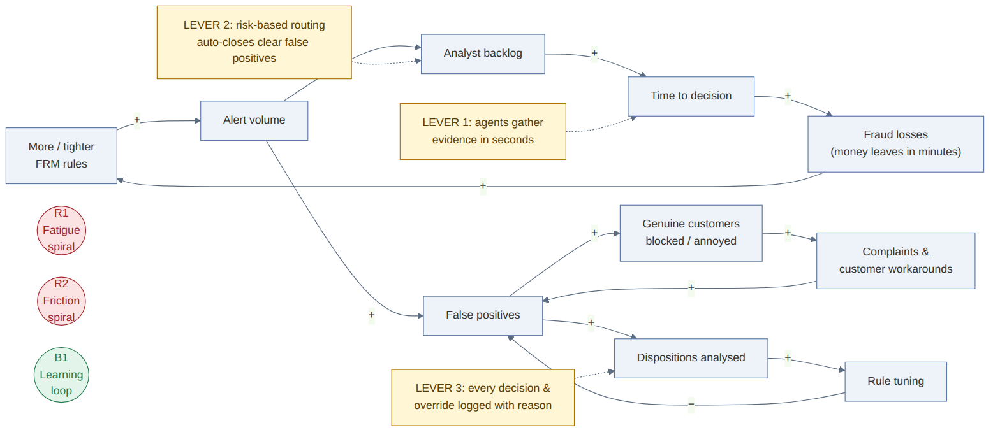
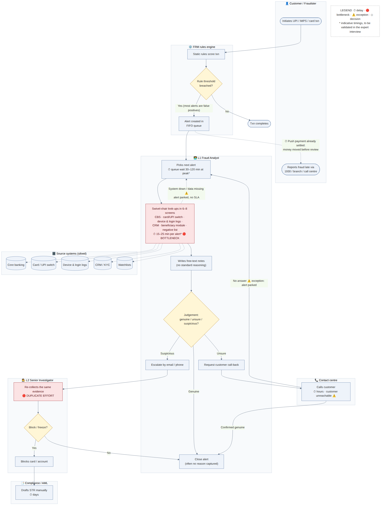
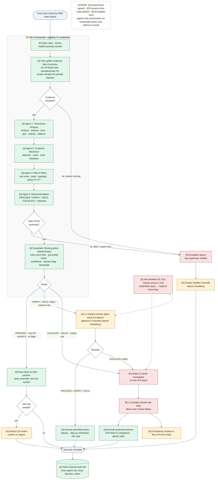
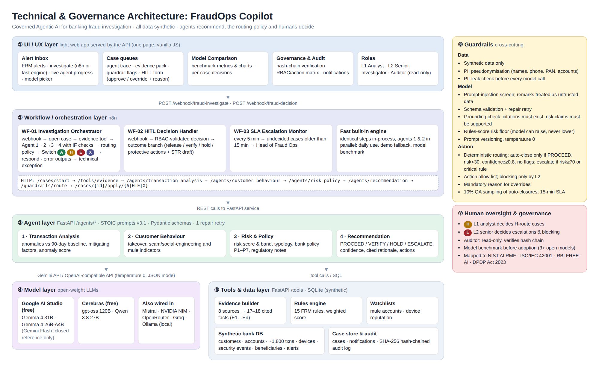
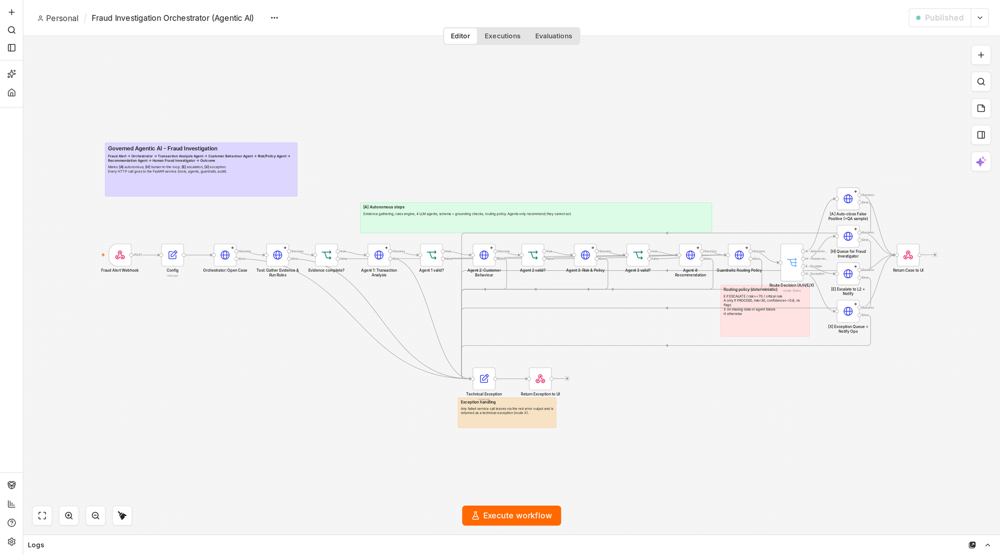
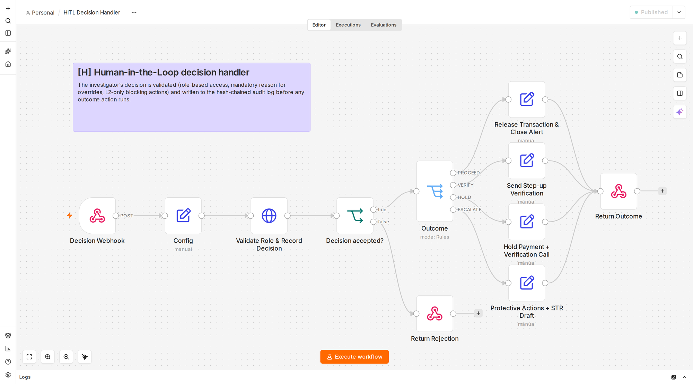
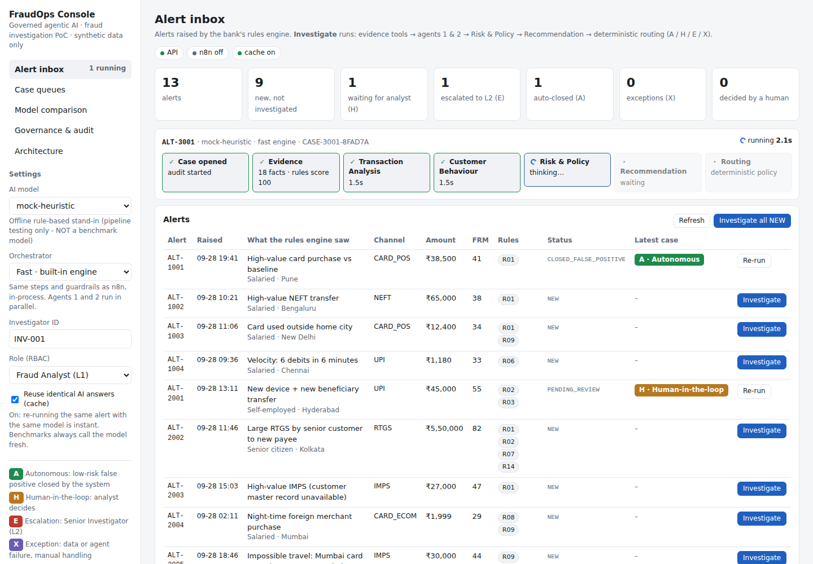
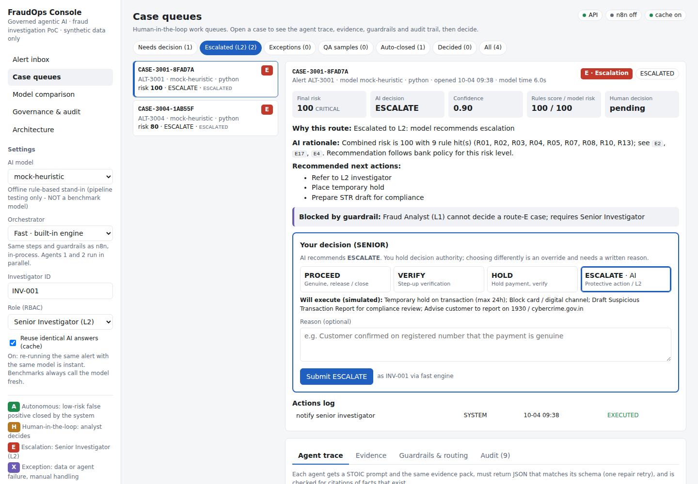

Fraud alerts investigated in seconds, decided by people.
A governed agentic AI that redesigns how bank fraud alerts are investigated. Four specialised agents assemble and weigh the evidence. A deterministic policy closes only clear false positives, sends ambiguous cases to an analyst and escalates high-risk cases to a senior investigator. Every step is audited.
- ✓Evidence tool: 18 facts, 15 rules, PII pseudonymisedE1–E18
- ✓Transaction Analysis Agentanomaly 100
- ✓Customer Behaviour Agent4 takeover signals
- ✓Risk & Policy AgentCRITICAL · ATO
- ✓Recommendation AgentESCALATE
L1 analyst blocked; Senior Investigator approves card block and STR draft. 15-minute SLA running.
Governed Agentic AI for Banking Fraud Investigation and Response
Banks process large volumes of digital transactions and fraud alerts. To decide whether a case should proceed, be verified, held or escalated, an analyst combines transaction behaviour, customer context, device and channel signals, fraud rules and other evidence. The challenge is to redesign this with governed Agentic AI while keeping appropriate human decision authority.
bank-fraud cases reported in FY25 (RBI Annual Report 2024-25)
of cases were digital-payment (card / internet) frauds: 13,516 cases, ₹520 crore
is how long push payments take to leave the bank, while alerts wait in queues and analysts check 6–8 systems by hand
The bottleneck is investigation, not detection
Critical thinking (elements of thought, 5 Whys) and systems thinking (iceberg, causal loops, leverage points) led us to place agents after the bank's rules engine rather than replacing it.
5 Whys
- Money leaves before the alert is actioned.
- Analysts are queued behind many low-risk alerts.
- Each alert needs many minutes of manual look-ups.
- Evidence sits in siloed systems with no case view.
- FRM tools detect, but don't investigate.
STOIC prompt refinement
Situation · Task · Objective · Information · Constraints.
- v1: "Is it fraud? Explain." Free text, no evidence trail, raw remarks mixed into instructions.
- v2: S-T-O plus a JSON reply. Structured, but claims not traceable.
- v3: full STOIC per agent with numbered facts E1…En, mandatory citations, risk scale, bank policy, and remarks declared untrusted data.

| Existing solution | What it does | What we take from it |
|---|---|---|
| NICE Actimize X-Sight ActOne (InvestigateAI) | Agentic investigation plans from policies; claims 50%+ less investigation time | Evidence traceable to data points |
| Feedzai Farol | Embedded agent: alert summaries, rule analysis, SAR drafting; analysts keep authority | Agent assists, human decides |
| Unit21 AI agents | Investigation and detection agents; optional auto-closure with audit trail and human sampling | QA sampling of autonomous closures |
| RBIH MuleHunter.AI | ML mule-account detection from 19 behaviour patterns; 23 banks per RTI (Dec 2025) | Mule watchlist and mule-pattern rule as evidence |
From swivel-chair look-ups to a governed agent pipeline
Today an L1 analyst opens 6–8 systems per alert, writes free-text notes and escalates by e-mail; L2 then re-collects the same evidence. In the TO-BE process every activity is marked by who acts.


Agents recommend. A policy routes. People decide.
Seven layers: a light web UI, n8n orchestration, four agents, open-weight models behind one OpenAI-compatible gateway, tools and synthetic data, cross-cutting guardrails, and human oversight.

One integrated application, triggered from the UI
The web UI calls the n8n webhook. n8n calls the evidence tool, the four agents and the routing policy, then branches A / H / E / X. Decisions go back through a second workflow that enforces role-based approval.




Test cases
| Case | Type | Scenario | Expected | Route |
|---|
Same cases, same prompts, same policy
Every model receives the same 13 evidence packs, STOIC prompts v3.1, output schemas, routing policy and thresholds at temperature 0. Metrics: decision and route accuracy, escalation recall and precision, false-positive rate, fraud recall, hallucination rate, explanation quality, structured-output compliance, task completion, latency, and a prompt-injection stress test.
Risk → guardrail → requirement → implementation
Primary framework: NIST AI RMF 1.0, cross-referenced to ISO/IEC 42001 and the RBI FREE-AI framework (2025). Selected rows below; the full table of 14 risks is in the report.
| Risk | Guardrail | Requirement | In the PoC |
|---|---|---|---|
| Customer PII sent to a model provider | Pseudonymisation, PII-leak check, synthetic data | NIST MEASURE (privacy) · ISO 42001 A.7 · DPDP | redact_pii, pii_leak_check |
| Hallucinated evidence | Numbered facts, mandatory citations, grounding check; flagged cases can't auto-close | NIST MEASURE (valid & reliable) · FREE-AI understandable by design | grounding_check |
| Prompt injection in payment remarks | Injection screen, untrusted-data rule, rules-score floor | NIST MEASURE (security & resilience) | screen_untrusted_text, ALT-3004 |
| Unsafe autonomous action | Agents only recommend; deterministic routing; allow-list; L2-only blocking | NIST MAP (human oversight) · ISO 42001 A.9 · FREE-AI people first | decide_route, HTTP 409 on bypass |
| Wrong person approves | Roles L1 / L2 / Auditor; reason required for overrides | NIST GOVERN (roles) · ISO 27001 access control | human_decision, HTTP 403 |
| No audit trail | SHA-256 hash-chained log of every agent call, route, decision and action | ISO 42001 event logs · FREE-AI assurance | /audit/verify |
Validated by a fraud-risk practitioner
Interview pending faculty approval. The expert will review the AS-IS and TO-BE processes, the architecture, the working PoC, the human-in-the-loop controls and the guardrails, and answer five mandatory questions on complexity, dependencies, speed, information volume and ambiguous cases. Their comments on feasibility, risks, usefulness and improvements will appear here with the transcript.
What this proof of concept does not prove yet
Limitations
- 13 synthetic cases show relative model behaviour, not production accuracy.
- The grounding check is keyword-based, a guardrail rather than proof.
- Explanation quality is scored by a rubric, not by experts.
- Holds, blocks, SMS and STR filing are simulated.
Next steps
- Shadow-mode pilot on historical, anonymised alerts.
- Self-hosted open model so data stays in the bank.
- Segment-level false-positive monitoring for fairness.
- A rule-tuning agent that learns from analyst dispositions.
Final demonstration video
Video link to be added (10–15 minutes, every team member presenting).